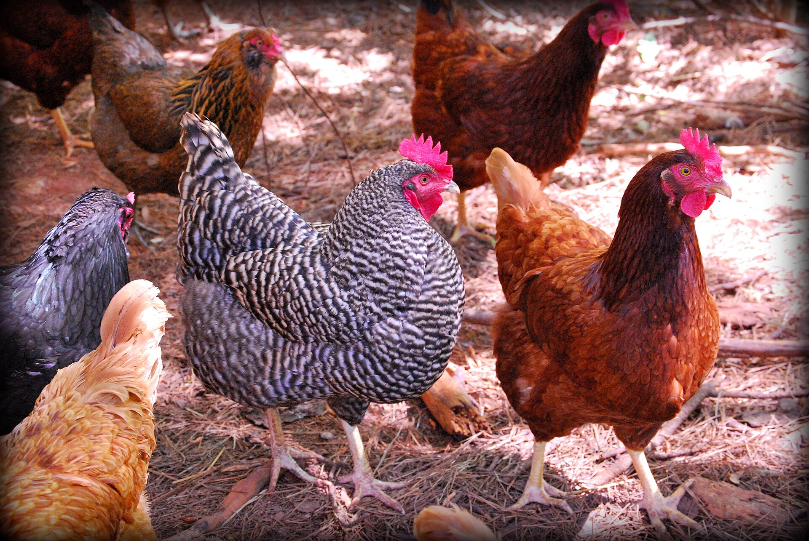
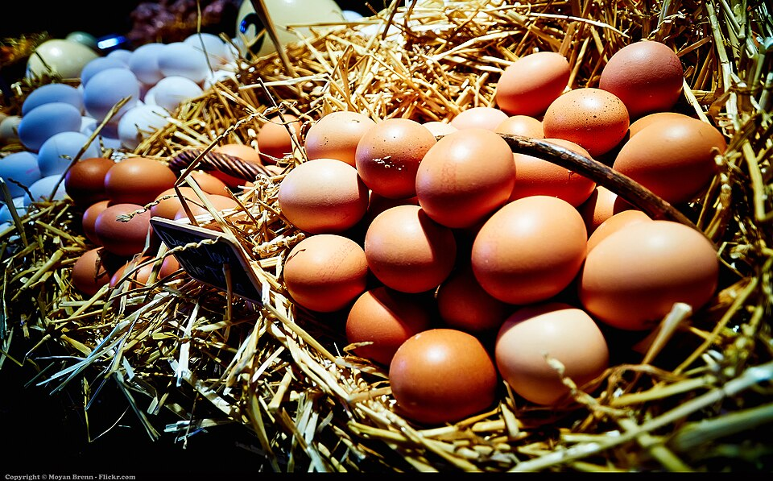
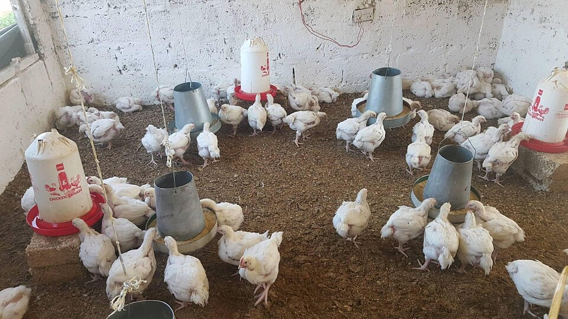
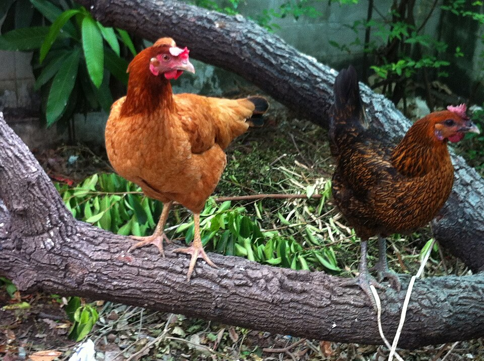
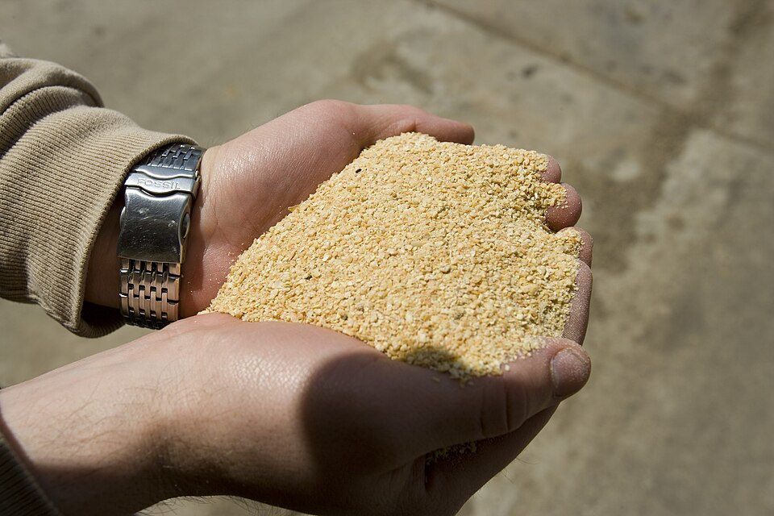
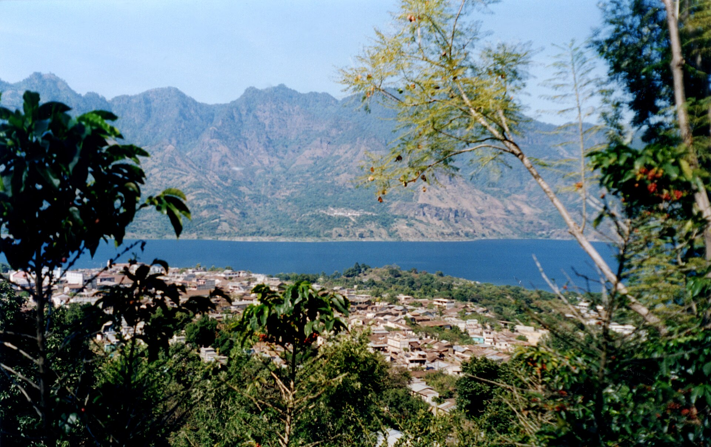
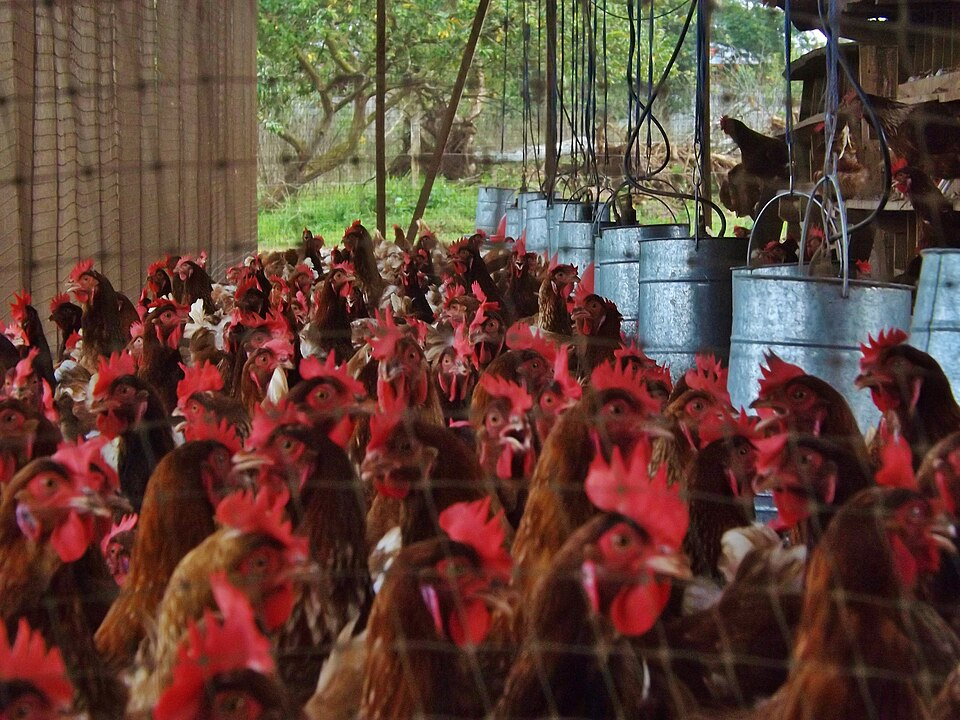
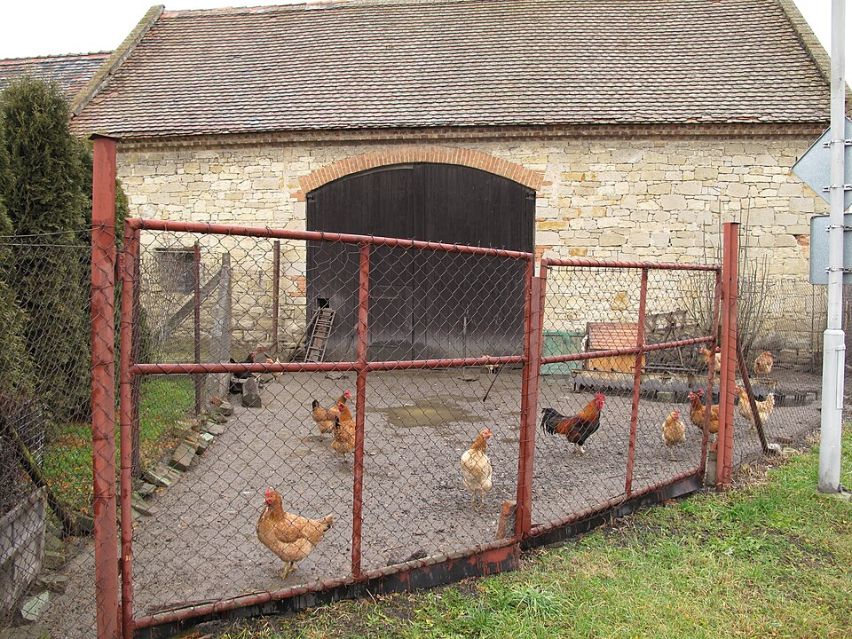
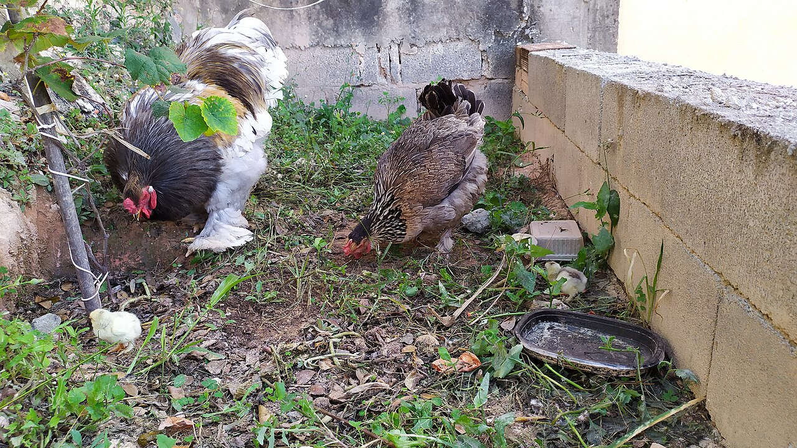
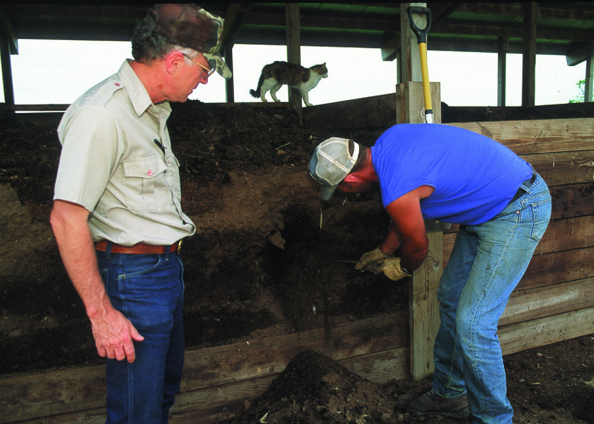

Huevo mediano
Caja de 360 · +11.44% frente a 2025
- Q408.57 2022
- Q445.48 2023
- Q385.15 2024
- Q341.00 2025
- Q380.00 2026

Edición 2026-W47 · 16 de noviembre de 2026
01 / PreciosPrecio de referencia mayorista · La Terminal, Ciudad de Guatemala · Fuente: MAGA
Comparado con el dato del 5 de noviembre, publicado en la edición anterior.




El maíz amarillo de primera subió a Q215 por quintal el 13 de noviembre, Q15 más que el dato de la semana pasada. MAGA lo atribuye a menos oferta por el clima en zonas productoras del sur y oriente. Huevo, pollo, gallina y soya quedaron sin cambio. En lo que va de noviembre, el huevo mediano está 11.44% arriba de 2025 y el maíz, 11.58%.
En su informe del 9 al 13 de noviembre, MAGA reportó abastecimiento normal de huevo, sobre todo de granjas de Fraijanes, Santa Catarina Pinula y San José Pinula, y de pollo, de plantas de Escuintla y Guatemala. Espera precios estables para ambos. Para el maíz espera que la oferta mejore y que el precio se mantenga.
Caja de 360 · +11.44% frente a 2025
Libra · Sin cambio frente a 2025
Quintal · +11.58% frente a 2025
Promedio de noviembre en La Terminal, según el informe semanal de MAGA del 9 al 13 de noviembre de 2026. El dato de 2026 cubre solo lo que va del mes.
† Cálculo de Chiik News con datos de MAGA. Fuentes: Precios diarios · Informe semanal del 9 al 13 de noviembre · Informe mensual de octubre

La ciencia, aterrizada al galpón.
San Pedro La Laguna y el lago de Atitlán, Guatemala.

De marzo de 2008 a noviembre de 2021, el laboratorio de micología de la Escuela de Medicina Veterinaria de la Universidad Nacional, en Heredia, Costa Rica, cultivó pulmones de pollo enviados por granjas: unos para diagnosticar aspergilosis y otros de lotes de control antes de entrar a la granja. De 1113 casos, 345 (31%) tuvieron al menos un hongo. El más común fue Aspergillus, sobre todo del grupo Fumigati.
El riesgo no fue igual para todas las aves. Fue mayor en pollo de engorde y en reproductoras, en aves de más de 15 días y en los casos de Puntarenas, la única provincia costera que envió muestras. También 2014 tuvo más riesgo, y los autores lo relacionan con un clima fuera de lo normal en la zona de granjas de Alajuela. Este hongo vive en el ambiente (suelo, granos, semillas, material que se pudre) y el ave se infecta sobre todo al respirar sus esporas.
Costa Rica tiene clima tropical como el nuestro, pero el estudio no se hizo en Guatemala y no midió lo que pasaba dentro de cada granja: solo dice en qué aves y dónde apareció más el hongo. Como medida general, y no como resultado del estudio, no le des condiciones: cama y alimento secos y sin moho, y buena ventilación. El polvo del galpón también expone a las personas; los autores piden equipo de protección para quienes trabajan ahí. Si ves aves que respiran con dificultad, consulta a tu veterinario.
Estudio retrospectivo de laboratorio (1113 casos, 2008-2021) · Pollo de engorde, gallina de postura y reproductoras · Costa Rica. No probado en Guatemala.
Galpón de gallinas ponedoras en Guápiles, Limón, Costa Rica. La foto no forma parte del estudio.
Por nave y por día: aves muertas y aves con dificultad para respirar, con su edad. Una vez por semana: cómo está la cama (seca, húmeda o apelmazada) y si viste moho en la cama o en el alimento.
Cultivo en agar Sabouraud dextrosa a 37 °C por cinco días, con pools de hasta cinco pares de pulmones por placa; un caso fue positivo con al menos una UFC sobre el tejido. Identificación morfológica por secciones, sin biología molecular. Secciones más frecuentes: Fumigati (197 de 392 aislamientos, 50.3%), Flavi (90, 22.9%) y Nigri (50, 12.7%); también se aislaron Paecilomyces variotii y hongos hialinos no esporulados. Casi todo creció como colonia única; solo cinco aislamientos superaron 10 UFC, con un máximo de 24.
En la regresión logística hubo más riesgo en 2014 (OR 3.48; IC 95% 1.64-7.37), en engorde (OR 2.07; 1.18-3.63), en reproductoras (OR 2.94; 1.60-5.41), en Puntarenas (OR 10.61; 3.90-28.88) y en aves de más de 15 días (OR 2.96; 1.35-6.50), sin diferencias por mes ni por sexo. De 129 lotes importados recibidos por el aeropuerto, 46 fueron positivos (35.7%), sin diferencia significativa con los nacionales. El servicio veterinario de Costa Rica (SENASA) exige acciones correctivas en la granja cuando se aísla al menos una UFC de Aspergillus.
Limitaciones: Estudio retrospectivo con casos enviados por las granjas, no una muestra al azar; mezcla lotes de control y aves enviadas para diagnóstico. Fichas de envío incompletas, laboratorio cerrado en vacaciones y sin clasificación por secciones antes de 2016. El resumen dice 31% (n = 392) y los resultados, 345 de 1113; aquí se usa 345 como casos positivos y 392 como total de aislamientos. Las razones de momios se tomaron del texto de resultados.
Fuente Ulloa-Avellán O, Calderón-Hernández A, Rubí-Chacón R, Vargas-Leitón B. Aspergillus spp. Isolated from Lungs of Poultry (Gallus gallus) at the Mycology Laboratory, School of Veterinary Medicine, Universidad Nacional, Heredia, Costa Rica between 2008 and 2021 and Associated Factors. Journal of Fungi, 2023;9(1):58. PMC9863504. Ver artículo

En 2024, investigadores europeos encuestaron a 243 personas ligadas a granjas pequeñas, extensivas u orgánicas de cerdos y aves: 58% eran productores y 33%, veterinarios y asesores. La parvada mediana era de 425 aves. Casi todos conocían la bioseguridad (85%) y se sentían responsables de aplicarla (87%), pero casi la mitad de los productores (44%) creía que en su granja ya no se podía mejorar.
La medida más aplicada era el manejo de los animales muertos (91%); la menos, lavar y desinfectar vehículos (48%). La razón principal para no aplicar una medida fue que no se adaptaba a la granja. Entre quienes no la aplicaban, la que más gente consideró eficaz fue conocer la salud de los animales que entran o ponerlos en cuarentena (83%); la que menos, la ropa protectora y los pediluvios (40%). Ante un brote, lo que más les preocupaba era que prohibieran tener las aves al aire libre (68.5%) y el sacrificio obligatorio (57.6%).
Es una encuesta de opiniones en Europa, no una medición de enfermedades: no prueba qué medida funciona mejor, y no se hizo en Guatemala. Pero describe algo que también pasa en granjas pequeñas y de traspatio: reglas pensadas para galpones grandes que no encajan. Nuestra lectura: la salida no es dejar la bioseguridad, sino escoger con tu veterinario las medidas que sí puedes cumplir siempre, como saber de dónde vienen las aves que compras y tenerlas aparte antes de juntarlas con las tuyas.
Encuesta en línea a 243 productores, veterinarios y asesores · Aves y cerdos de granjas pequeñas, extensivas y orgánicas · Europa (Italia, Bélgica, Francia, Rumania y otros). No probado en Guatemala.
Foto ilustrativa: granja pequeña en Košátky, Chequia. No forma parte del estudio.
Cada vez que entren aves nuevas: fecha, cuántas, de dónde vienen y cuántos días las tuviste aparte antes de juntarlas. Y una lista de visitas: quién entró a los galpones y cuándo.
Estudio transversal con cuestionario en línea del proyecto europeo PPILOW, abierto desde el 1 de mayo de 2024 en siete idiomas. Se incluyeron granjas al aire libre de cualquier tamaño y granjas pequeñas, con un límite de 3000 aves o 300 cerdos. Se evaluaron 13 medidas de bioseguridad; una medida contaba como aplicada si la respuesta era 'siempre' o 'a menudo'. Análisis factorial de los criterios de bienestar de Welfare Quality y pruebas de chi cuadrado.
Para restringir y registrar visitas, usar ropa o pediluvios al entrar, desinfectar entre lotes e impedir el contacto con otros animales, más de la mitad dijo que la medida no se adaptaba a su granja. Los veterinarios y asesores consideraron las medidas más eficaces que los productores, y los productores dieron más peso a la libertad de movimiento y a la conducta propia de la especie. Más de un tercio no estuvo de acuerdo en que las medidas exigidas por las autoridades mejoren la salud y el bienestar animal.
Limitaciones: Percepciones y prácticas declaradas, no mediciones de enfermedad ni de eficacia. Muestra por conveniencia, distribuida por listas de correo; el texto habla de seis países, pero su tabla 3 incluye siete. Mezcla productores de cerdos y aves (28.8% tenían ambos). Las cifras por medida salen de figuras; aquí solo se usan las que el texto cita.
Fuente Bassoli M, Collin A, Goracci J, et al. Life worth living or healthy lives? Stakeholder views on biosecurity and animal welfare in EU organic, extensive and small-scale pig and poultry farming systems. Veterinary Research, 2026;57:200. PMC13753137. Ver artículo

Foto ilustrativa: aves de patio. No es del estudio de 2006.
En 2006, la gripe aviar H5N1 preocupaba al mundo: al 27 de febrero de ese año, la OMS contaba 173 casos humanos confirmados y 93 muertes, asociados al contacto directo con aves. En las ferias agropecuarias del medio oeste de Estados Unidos se juntaban aves de muchas granjas en jaulas apiladas, el juez pasaba de un ave a otra sin lavarse las manos y el público podía tocarlas.
Sandra Olson y Gregory Gray hicieron un experimento sencillo en el verano de 2004, en dos ferias de condado: una de prueba en Iowa y otra en Minnesota. Cada día espolvorearon a escondidas un polvo casi invisible, que brilla con luz ultravioleta, en un solo pollo de engorde blanco: el "pollo troyano", que imitaba a un ave que suelta un microbio en sus heces. Luego revisaron con luz ultravioleta las manos de 94 personas. Ocho (8.5%) tenían polvo, y ninguna era expositora: eran familiares, visitantes y otras personas. Los autores concluyeron que las exhibiciones de aves vivas pueden mover contagios y que hacían falta programas de higiene.
En Guatemala también hay mercados y ferias donde se juntan aves de muchos lugares. La lección de ese pollo sigue vigente: un ave puede ensuciar manos y jaulas sin que nadie lo note, y las manos llevan el contagio. Lavarte las manos al entrar y al salir del galpón, y tener aparte las aves que compras antes de juntarlas con las tuyas, son prácticas que responden a esa lección. La conexión con hoy es nuestra interpretación.
